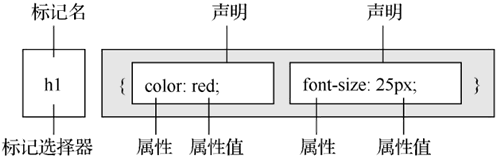
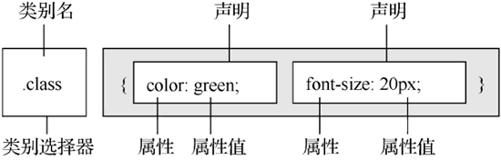
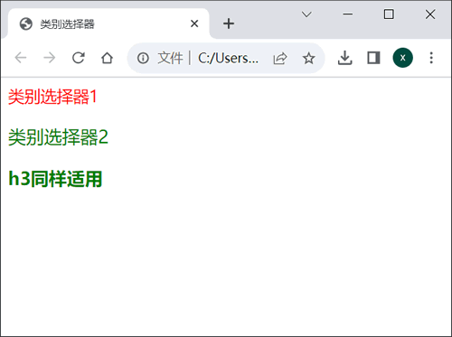
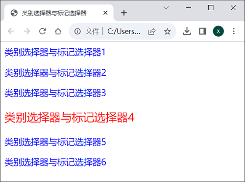
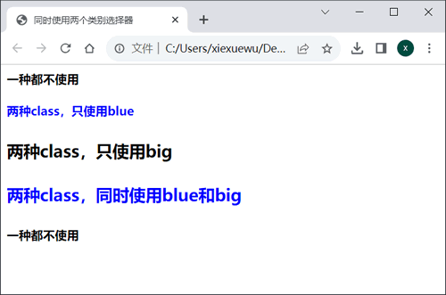
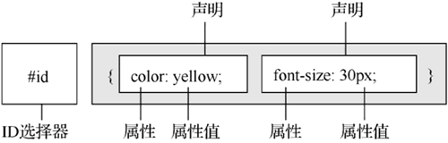
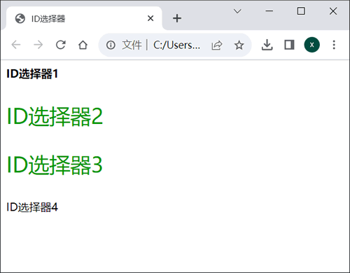

首页 > 编程笔记
CSS选择器（标签选择器+类别选择器+ID选择器）
CSS的作用是设置网页各个组成部分的表现形式。比如描述网页上一个二级标题的属性表，可以设想应该是下面这个样子。
CSS 的思想就是首先指定对什么“对象”进行设置，然后指定对该对象的哪个方面的“属性”进行设置，最后给出该设置的“属性值”。因此，概括来说，CSS 就是由 3 个基本部分组成的，分别是“对象”、“属性”和“属性值”。
在 CSS 的 3 个组成部分中，“对象”是很重要的，它指定了对哪些网页元素进行设置，因此它有一个专门的名称，叫做选择器（selector）。
选择器是 CSS 中很重要的概念，所有 HTML 中的标签样式都是通过不同的 CSS 选择器进行控制的。用户只需要通过选择器对不同的 HTML 标签进行选择，并赋予各种样式声明，即可实现各种效果。
CSS中有几种不同类型的选择器，本节先介绍三种基本的选择器，分别是标签选择器、类别选择器和 ID 选择器。
如果希望所有 <h1> 标签不采用红色而采用蓝色，则只需要将属性 color 的属性值修改为 blue，即可全部生效。
CSS 语言对所有属性和属性值都有相对严格的要求。如果声明的属性在 CSS 规则中没有，或者某个属性值不符合该属性的要求，都不能使该 CSS 语句生效。
下面是一些典型的错误语句。
类别选择器的名称可以由用户自定义，其属性和属性值跟标签选择器一样，也必须符合 CSS 规则，如下图所示。
例如，当页面中同时出现两个 <p> 标签，并且希望它们的颜色不一样时，就可以通过设置不同的类别选择器来实现。一个完整的实例如下：
可以看到两个 <p> 标签的颜色不同。任何一个类别选择器都适用于所有 HTML 标签，只需要用 HTML 标签的 class 属性声明即可，例如 <h3> 标签同样使用了 .green 这个类别。
仔细观察上例还会发现，最后一行 <h3> 标签显示效果为粗体字，而同样使用 .green 选择器的第 2 个 <p> 标签却没有变成粗体。这是因为 .green 类别中没有定义字体的粗细属性，因此各个 HTML 标签都采用了其自身默认的显示方式，即 <p> 标签默认为正常粗细，而 <h3> 标签默认为粗体字。
很多时候，页面中几乎所有的 <p> 标签都会使用相同的样式风格，只有 1~2 个特殊的 <p> 标签需要使用不同的风格来突出，这时可以通过配合使用类别选择器与标签选择器来实现。例如下面这段代码：
在 HTML 标签中，还可以同时给一个标签运用两个类别选择器，从而将两个类别的样式风格同时运用到一个标签中。这在实际制作网站时会很有用，可以减短代码的长度。例如下面这段代码：
可以看到使用第 1 个类别选择器的第 2 行文字显示为蓝色，而第 3 行文字仍为黑色，但由于使用了 .big，因此其字体变大了。第 4 行文字通过class="blue big"将两个样式同时加入，得到了蓝色大字体。第 1 行和第 5 行文字没有使用任何样式，仅作为对比时的参考。
在 HTML 标签中只需要利用 id 属性，就可以直接调用 CSS 中的 ID 选择器，其格式如下图所示。
下面举一个实例：
可以看到第 2 行与第 3 行都显示了 CSS 的方案。换句话说，在很多浏览器下，ID 选择器也可以用于多个标签。
这里需要指出的是，将 ID 选择器用于多个标签是错误的，因为每个标签所定义的 id 属性不仅 CSS 可以调用，JavaScript 等其他脚本语言同样可以调用。如果一个 HTML 中有两个相同 id 属性的标签，则将导致 JavaScript 在查找 id 属性时出错，例如函数 getElementById()。
正因为 JavaScript 等脚本语言也能调用 HTML 中设置的 id 属性，因此 ID 选择器一直被广泛地使用。程序开发人员在编写 CSS 代码时，应该养成良好的编写习惯，即一个 id 属性最多只能被赋予一个 HTML 标签。
另外，从图 7 中还可以看到，最后一行没有任何 CSS 样式风格的显示，这意味着 ID 选择器不支持像如类别选择器那样的多风格同时使用，例如 id="bold green" 是完全错误的语法。
二级标题{
字体：宋体；
大小：15像素；
颜色：红色；
装饰：下画线；
}
再进一步，如果我们把上面的表格用英语写出来，则可得到下面的代码。
h2{
font-family: 宋体;
font-size:15px;
color: red;
text-decoration: underline;
}
这就是完全正确的 CSS 代码了。CSS 的思想就是首先指定对什么“对象”进行设置，然后指定对该对象的哪个方面的“属性”进行设置，最后给出该设置的“属性值”。因此，概括来说，CSS 就是由 3 个基本部分组成的，分别是“对象”、“属性”和“属性值”。
在 CSS 的 3 个组成部分中，“对象”是很重要的，它指定了对哪些网页元素进行设置，因此它有一个专门的名称，叫做选择器（selector）。
选择器是 CSS 中很重要的概念，所有 HTML 中的标签样式都是通过不同的 CSS 选择器进行控制的。用户只需要通过选择器对不同的 HTML 标签进行选择，并赋予各种样式声明，即可实现各种效果。
CSS中有几种不同类型的选择器，本节先介绍三种基本的选择器，分别是标签选择器、类别选择器和 ID 选择器。
标签选择器
一个 HTML 页面由很多不同的标签组成，CSS 标签选择器就负责声明哪些标签采用哪种 CSS 样式。因此，每一种 HTML 标签的名称都可以作为相应的标签选择器的名称。例如 p 选择器，就是用于声明页面中所有 <p> 标签的样式风格。同样可以通过 h1 选择器来声明页面中所有的 <h1> 标签的样式风格。例如下面这段CSS代码。
<style>
h1{
color: red;
font-size: 25px;
}
</style>
这段 CSS 代码声明了 HTML 中所有的 <h1> 标签，文字的颜色都采用红色，大小都为 25px。每一个 CSS 选择器都包含选择器本身、属性和属性值，其中属性和属性值可以设置多个，从而对同一个标签声明多种样式风格，如下图所示。

图 1 CSS标签选择器
图 1 CSS标签选择器
如果希望所有 <h1> 标签不采用红色而采用蓝色，则只需要将属性 color 的属性值修改为 blue，即可全部生效。
CSS 语言对所有属性和属性值都有相对严格的要求。如果声明的属性在 CSS 规则中没有，或者某个属性值不符合该属性的要求，都不能使该 CSS 语句生效。
下面是一些典型的错误语句。
Head-height: 48px; /* 非法属性 */ color: ultraviolet; /* 非法属性值 */对于上面提到的这些错误，通常情况下可以直接利用 CSS 编辑器（如 VS Code）的语法提示功能来避免，但在某些时候还需要查阅 CSS 手册。
类别选择器
标签选择器一旦声明，页面中所有相应的标签都会产生变化。例如当声明了 <p> 标签为红色时，页面中所有的 <p> 标签都将显示为红色。如果希望其中的某一个 <p> 标签不是红色而是蓝色，这时仅依靠标签选择器是不够的，还需要引入类别（class）选择器。类别选择器的名称可以由用户自定义，其属性和属性值跟标签选择器一样，也必须符合 CSS 规则，如下图所示。

图 2 类别选择器
图 2 类别选择器
例如，当页面中同时出现两个 <p> 标签，并且希望它们的颜色不一样时，就可以通过设置不同的类别选择器来实现。一个完整的实例如下：
<html>
<head>
<title>类别选择器</title>
<style type="text/css">
.red{
color:red; /* 红色 */
font-size:18px; /* 文字大小 */
}
.green{
color:green; /* 绿色 */
font-size:20px; /* 文字大小 */
}
</style>
</head>
<body>
<p class="red">类别选择器1</p>
<p class="green">类别选择器2</p>
<h3 class="green">h3同样适用</h3>
</body>
</html>
效果如下图所示：

图 3 类别选择器效果
图 3 类别选择器效果
可以看到两个 <p> 标签的颜色不同。任何一个类别选择器都适用于所有 HTML 标签，只需要用 HTML 标签的 class 属性声明即可，例如 <h3> 标签同样使用了 .green 这个类别。
仔细观察上例还会发现，最后一行 <h3> 标签显示效果为粗体字，而同样使用 .green 选择器的第 2 个 <p> 标签却没有变成粗体。这是因为 .green 类别中没有定义字体的粗细属性，因此各个 HTML 标签都采用了其自身默认的显示方式，即 <p> 标签默认为正常粗细，而 <h3> 标签默认为粗体字。
很多时候，页面中几乎所有的 <p> 标签都会使用相同的样式风格，只有 1~2 个特殊的 <p> 标签需要使用不同的风格来突出，这时可以通过配合使用类别选择器与标签选择器来实现。例如下面这段代码：
<html>
<head>
<title>类别选择器与标签选择器</title>
<style type="text/css">
p{ /* 标签选择器 */
color:blue;
font-size:18px;
}
.special{ /* 类别选择器 */
color:red; /* 红色 */
font-size:23px; /* 文字大小 */
}
</style>
</head>
<body>
<p>类别选择器与标签选择器1</p>
<p>类别选择器与标签选择器2</p>
<p>类别选择器与标签选择器3</p>
<p class="special">类别选择器与标签选择器4</p>
<p>类别选择器与标签选择器5</p>
<p>类别选择器与标签选择器6</p>
</body>
</html>
首先通过标签选择器定义 <p> 标签的全局显示方案，然后通过一个类别选择器对需要突出的 <p> 标签进行单独设置，这样大大提高了代码的编写效率，效果如下图所示。

图 4 两种选择器配合使用
图 4 两种选择器配合使用
在 HTML 标签中，还可以同时给一个标签运用两个类别选择器，从而将两个类别的样式风格同时运用到一个标签中。这在实际制作网站时会很有用，可以减短代码的长度。例如下面这段代码：
<html>
<head>
<title>同时使用两个类别选择器</title>
<style type="text/css">
.blue{
color:blue; /* 颜色 */
}
.big{
font-size:22px; /* 字体大小 */
}
</style>
</head>
<body>
<h4>一种都不使用</h4>
<h4 class="blue">两种class，只使用blue</h4>
<h4 class="big">两种class，只使用big </h4>
<h4 class="blue big">两种class，同时使用blue和big</h4>
<h4>一种都不使用</h4>
</body>
</html>
效果如下图所示：

图 5 同时使用两个类别选择器
图 5 同时使用两个类别选择器
可以看到使用第 1 个类别选择器的第 2 行文字显示为蓝色，而第 3 行文字仍为黑色，但由于使用了 .big，因此其字体变大了。第 4 行文字通过class="blue big"将两个样式同时加入，得到了蓝色大字体。第 1 行和第 5 行文字没有使用任何样式，仅作为对比时的参考。
ID选择器
ID 选择器的使用方法与类别选择器基本相同，不同之处在于 ID 选择器只能在 HTML 页面中使用一次，因此其针对性更强。在 HTML 标签中只需要利用 id 属性，就可以直接调用 CSS 中的 ID 选择器，其格式如下图所示。

图 6 ID选择器
图 6 ID选择器
下面举一个实例：
<html>
<head>
<title>ID选择器</title>
<style type="text/css">
#bold{
font-weight:bold; /* 粗体 */
}
#green{
font-size:30px; /* 字体大小 */
color:#009900; /* 颜色 */
}
</style>
</head>
<body>
<p id="bold">ID选择器1</p>
<p id="green">ID选择器2</p>
<p id="green">ID选择器3</p>
<p id="bold green">ID选择器4</p>
</body>
</html>
效果如下图所示：

图 7 ID选择器效果
图 7 ID选择器效果
可以看到第 2 行与第 3 行都显示了 CSS 的方案。换句话说，在很多浏览器下，ID 选择器也可以用于多个标签。
这里需要指出的是，将 ID 选择器用于多个标签是错误的，因为每个标签所定义的 id 属性不仅 CSS 可以调用，JavaScript 等其他脚本语言同样可以调用。如果一个 HTML 中有两个相同 id 属性的标签，则将导致 JavaScript 在查找 id 属性时出错，例如函数 getElementById()。
正因为 JavaScript 等脚本语言也能调用 HTML 中设置的 id 属性，因此 ID 选择器一直被广泛地使用。程序开发人员在编写 CSS 代码时，应该养成良好的编写习惯，即一个 id 属性最多只能被赋予一个 HTML 标签。
另外，从图 7 中还可以看到，最后一行没有任何 CSS 样式风格的显示，这意味着 ID 选择器不支持像如类别选择器那样的多风格同时使用，例如 id="bold green" 是完全错误的语法。
关注公众号「站长严长生」，在手机上阅读所有教程，随时随地都能学习。内含一款搜索神器，免费下载全网书籍和视频。

微信扫码关注公众号